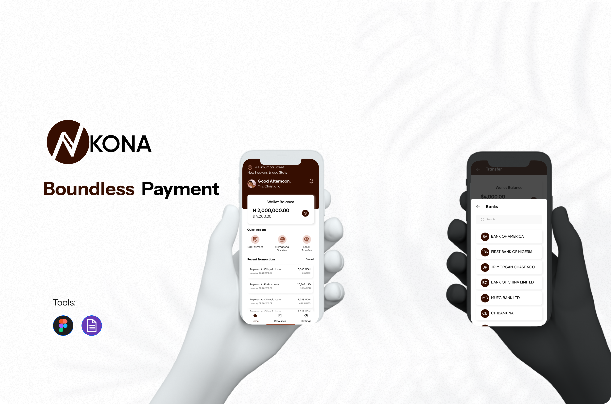

I designed a User Flow to serve as a roadmap, guiding our ideas toward crafting a solution that is not only simple and intuitive but also impactful and meaningful for users.
User Flow

Kona is a cross-border mobile payment application that enables users to send and receive money globally using only their local currency. With Kona, a user in Nigeria can send funds in NGN, and the recipient in the U.S. can receive the money instantly in USD or USDT, no domiciliary account required. Kona exists to eliminate the financial barriers that have long prevented students, parents, workers, and business owners from making seamless international transactions.

Nigeria has a massive population of students and workers pursuing opportunities abroad. However, many of them struggle to pay tuition, handle emergencies, or support family members overseas because:
This broken process leads to frustration, financial delays, missed deadlines, and lost opportunities. Kona solves this problem by allowing anyone to transfer money internationally with zero banking hurdles, using the money they already have.
To Create an intuitive, secure, and accessible mobile application that enables cross-border money transfers without requiring specialized accounts, while delivering the speed and simplicity users expect from modern fintech products.
To deeply understand user pain points, adoption barriers, and expectations, I conducted a mixed-methods research process:
Explored existing solutions like Western Union, WorldRemit, and traditional banking systems.
I reviewed 3 popular cross-border payment applications: Flutterwave, Payoneer, Chipper Cash
There is room for a Nigerian-first, Africa-focused solution offering:
Based on research insights, I developed solutions focused on trust, clarity, and speed.
Users can sign up in minutes. Instant automatic account number generation. Guided verification process to build trust.
A dynamic, real-time feature allowing users to convert NGN to USD/USDT instantly, view transparent rates, and compare before they send. This ensures clarity and eliminates surprise charges.
The core feature that allows users to send money from Nigeria to USA (NGN to USDT), receive payments globally, use only their local currency, and skip domiciliary accounts entirely. Clear steps, simplified input forms, and built-in fraud detection ensure safety and usability.
Users see exchange rate, charges, time of arrival, recipient currency and amount. This builds confidence, a major concern among Nigerian users.
I created a user flow that reduces friction and supports quick decision-making: Home, Send, Receive, Transaction history, Profile & verification. Each step supports clear actions and prevents user confusion.
After usability testing and pilot simulations, the redesigned experience showed the following outcomes:
92% of testers successfully completed a cross-border transfer on their first attempt. 86% reported feeling more confident using Kona compared to banks and Western Union. 70% preferred Kona's onboarding over traditional financial apps.
Reduced customer support dependency due to intuitive flows. Increased early adoption among students preparing for study abroad programs. Strong market differentiation as a "domiciliary-free" transfer solution.
Kona positions itself as the first Nigerian fintech solution enabling global transfers without requiring a domiciliary account, a game-changing competitive advantage.
I designed a User Flow to serve as a roadmap, guiding our ideas toward crafting a solution that is not only simple and intuitive but also impactful and meaningful for users.
Low-fidelity wireframes exploring initial concepts and information architecture

Kona Lofi
A selection of key screens showcasing the user experience across different features and user flows

Kona Screens
Kona is a transformative mobile application that simplifies international money transfers by eliminating the need for domiciliary accounts and traditional services. Through in-depth user research and a user-centered design approach, I created a seamless, cross-platform solution that empowers users to send and receive money globally with ease and transparency.
This project showcases my ability to solve real-world problems through intuitive design, enhancing user experience while streamlining complex financial transactions. It is a perfect example of my skills in UX design, problem-solving, and delivering impactful, accessible solutions.
For convenience, you can explore the prototype by clicking the link below to access the interactions.
View Figma Prototype